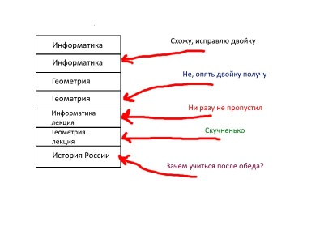
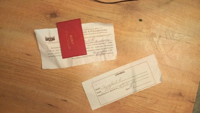

Пары
СУНЦ по форме обучения приближён к университетской системе. Здесь также есть семинары и лекции, но это касается только профильных предметов школы. Постараемся понять, стоит ли ходить на лекции, как вести себя на семинарах, делать ли домашки.
Лекции занимают урок или два, в зависимости от предмета. Ходить на них можно, но чем больше сунец отучился, тем меньше у него желания. Действительно, понимать материал и получать хорошие оценки можно обходясь только семинарами. И даже если люди ходят, то больше втыкают в телефон, чем записывают, но не надо доставать ноут - моветон. По материалам лекций вас будут спрашивать только на сессиях, а записи для подготовки можно взять у более прилежных товарищей.
Здесь закаляется сталь. Именно благодаря семинарам вы и усвоите материал, поскольку будете делать своими руками. И самые нужные теоритические знания почерпнёте тут же. Большинство ваших оценок будут получены именно на семинарах, и ваша активность на них окажет подавляющее влияние на цифры в аттестате. Вообще, советую не расслабяться в начале, чтобы заработать себе имя, в дальнейшем это нехило подсобит вам.
Как устроены домашние задания в СУНЦе? В большинстве случаев, вам даётся задание на определённый срок, если не сдадите вовремя, словите двойку, хотя в основном этим только угрожают, и дают отсрочку, при этом уменьшая вашу оценку. Ну или не уменьшая.
В итоге, хорошо учиться сунцы могут не переутруждаясь, уделяя особое внимание только приоритетному предмету. Однако я советую не забивать на домашки, ведь никто не хочет тройки в аттестате.
Спецкурсы

В СУНЦе действует система спецкурсов, согласно которой ученик должен посещать и сдавать зачёт хотя бы одного спецкурса, конечно, профиля школы. И формально это носит обязательный характер, но фактически за этим никто не следит. Лишь однажды нас зачем-то заставили заполнить Google-формы, но ничего не изменилось. В спецкурсах чётко прослеживаются два направления:
Здесь вроде всё очевидно. Нужно выбрать парочку кружков, в которых будет идти подготовка к олимпиадам или ЕГЭ. Легко заметить, что количество посетителей падает по экспоненте в ближайщие сроки от начала учебного года, и объяснить это можно тем, что люди определяются с вектором своего развития и отсеивают лишнее, ну или просто ленятся. В любом случае, посещение спецкурсов действительно ощутимо влияет на уровень подготовки, и ,по-моему, эффективнее самоподготовки (которая, как известно, проходит параллельно с просмотром видосов и ответами на сообщения).
В этом разделе всевозможные спортивные секции, клубы по интересам и прочие интересные занятия. Наибольшей популярностью пользуется киноклуб, проходящий по субботам в актовом зале, дающий возможность ознакомиться с шедеврами мирового кинематографа и громкими новинками. В конце года нужно будет сдавать реферат о личности, так или иначе внёсшей вклад в развитие кинематографа. Спецкурсы такого рода предоставляют возможность обогатиться духовно, прекратив нарушение гармонии развития личности из-за углубления в изучении конкретных предметов и пренебрежения искусством, и получить эстетическое удовольствие. Спортивные секции также необходимы, иначе как разогнать кровь по телам вечно ботающих сунцов? Короче, многостороннее развитие рулит!
В общем, сунцовские спецкурсы позволяют неслабо подготовиться к нужным вещам при должном уровне усердия и от скуки не закиснуть. Однозначно, ходить стоит!
Справки
Рано или поздно любому сунцу придётся иметь дело со справками, будь то документ из двадцать пятого или заветное освобожение от уроков. В этой статье мы постараемся описать самые популярные способы их получения, общие советы и личные рекомендации. Поехали!
Итак, вы вдруг осознали, что для важной олимпиады, долгой дороги и ещё чего-нибудь вам нужна справка. Однако получить её не так просто, как кажется: вам нужно пройти фейс-контроль в лице Валентины Ивановны, главы учебного отдела. Если вы небриты (особенно касается девочек) или неопрятно одеты, можно получить от ворот поворот, хотя в большинстве случаев справку можно получить, предварительно выслушав справедливые наставления, изображая при этом искреннее раскаяние. И не забудьте прихватить с собой ученичку: она нужна для оформления справки.
Справки из медпункта нужны в следующих случаях: на уроке контрольная, а вы не готовы, не сделана домашка, вам просто лень, в конце концов просто заболели. Инновации в России внедряются повсеместно, поэтому теперь температуру мгновенно измеряют с помощью лазерного устройства, которое подносят по лбу. Пока что средства обмануть его не изобретено, значит нужно искать другие способы. Самый проверенный - давление. Поднять его можно посредством физических упражнений и кофе. Не советую экспериментировать с недугами: за болящий живот вполне можешь получить направление в больницу.
В целом, не нужно прогуливать беспричинно часто, иначе это может отрицательно отразиться на ваших оценках, да и в целом умнее вы не станете. Прогуливайте меньше!